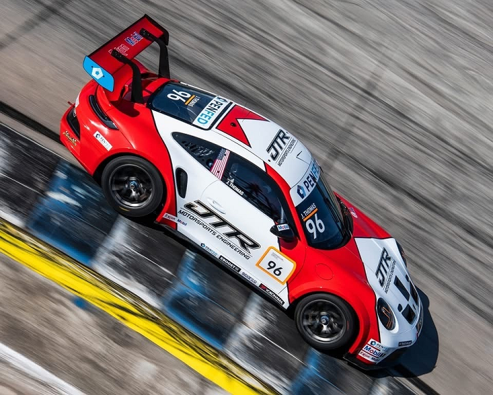

About Us
JTR Motorsports Engineering is an American professional racing and motorports developement organization based in North Vernon, Indiana. With entries in karts, pavement late models, IMSA and SRO GT4, GT3, Mx-5 Cup, Porsche, sprint and endurance racing, the JTR catalogue is diverse and growing.
Our Successes
JTR's time within the Whelen Mazda Mx-5 Cup has been nothing short of sensational. Winning Rookie of the Year, back-to-back championships, along with numerous race wins, Jared Thomas and the JTR team have notched their names in the history books of the series.